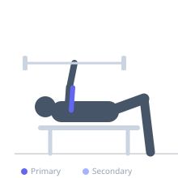
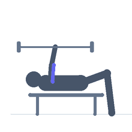

Exercise guide / EZ-Bar Skull Crusher
EZ-Bar Skull Crusher
The EZ-bar skull crusher replaces the straight bar with an EZ-curl bar, reducing wrist and elbow stress while maintaining tricep loading similar to the barbell version. The angled grip positions of the EZ-bar allow a more natural hand angle during the movement. It is the most common skull crusher variation for high-volume training due to its superior comfort and reduced injury risk over straight bar versions.
Primary muscles
triceps long head
triceps lateral head
triceps medial head
Secondary muscles
Equipment
EZ-Curl Bar
Flat Bench


Starting position
- Lie on a flat bench, EZ-bar pressed to full extension above the chest. Grip the inner handles.
Setup
- Have a spotter hand the EZ-bar off or unrack from a low rack. Use the inner grips of the EZ-bar.
Steps
- Step 1: Begin with EZ-bar fully extended above the chest.
- Step 2: Keeping upper arms vertical, lower the EZ-bar toward the forehead by bending only the elbows.
- Step 3: Lower to just above the forehead.
- Step 4: Extend the elbows to return to the starting position.
Coaching cues
- Upper arms pinned — only elbows move
- Lower to the forehead
- Squeeze the triceps at lockout
Breathing
- Inhale on the descent, exhale on the press.
Range of motion
- Full extension to bar just above the forehead.
Tempo
- 2-0-2-0
Common mistakes
- Upper arms drifting forward or backward during the movement
- Excessive elbow flare
Safety
- EZ-bar still requires careful attention at the bottom — do not go to failure without a spotter
Training
- strength: 6–10 reps
- hypertrophy: 10–15 reps
- strength: 3–4 sets
- hypertrophy: 3–4 sets
- Rest: {'strength': 150, 'hypertrophy': 90}